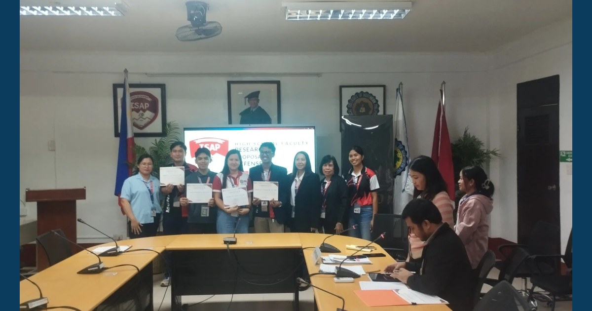

ISAP High School Faculty Strengthen Research Culture Through Research Proposal Defense

ISAP scheduled its High School Faculty Research Proposal Defense for November 13, 2026, at 8:30 a.m., supporting faculty research engagement, scholarly inquiry, and a research-oriented academic environment.
Read full article